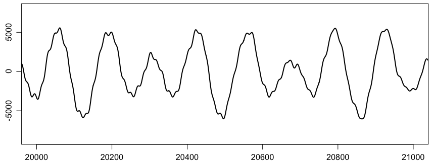
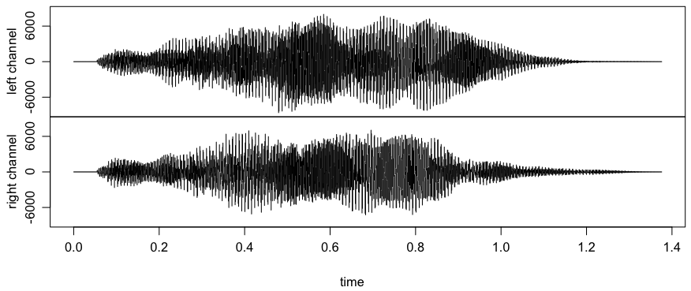

WAVEファイルに収められた音RやExcelなどで読めるテキスト形式にするための簡単なツールとして，ここでは WAVE file format で紹介している拙作の dumpwave.c を使う。これをコンパイルして，例えば
./dumpwave "/Applications/Microsoft Office 2008/Office/EntourageCore.framework/Versions/12/Resources/welcome.wav" > welcome.txt
としてテキストファイルに変換する。これをRで読み込む：
welcome = read.table("welcome.txt")
ここで summary(welcome) と打ち込むと，チャンネル V1，V2 が読み取れたことがわかる。試しに V1（左チャンネル）の一部をプロットしてみる。
par(mgp=c(2,0.8,0)) # 軸マージン（デフォルト: c(3,1,0)）
plot(welcome$V1, xlim=c(20000,21000), type="l", xlab="", ylab="", lwd=2)

別の方法として，
plot(welcome$V1[20000:21000], type="l", xlab="", ylab="", lwd=2)
ともできる。両者は最大値・最小値の計算や目盛りが異なる。
非常に長いWAVEファイルについては，Rに全部読み込むのはたいへんなので，あらかじめ標準的なテキストフィルタで切り出すとよい。例えば20000行目から21000行目を取り出すには，次のような方法が考えられる。
sed -n 20000,21000p welcome.txt
head -21000 welcome.txt | tail -1001
RにはWAVEファイルを直接扱える tuneR（チューナー）というパッケージがある。これを使ってみよう。あらかじめパッケージインストーラまたはコマンドでtuneRをインストールしておく。コマンドの場合は次のように打ち込めばインストールできる：
install.packages("tuneR")
インストールされたパッケージを読み込む：
library(tuneR)
自分のパソコンにある適当なWAVEファイルを読み込む：
welcome = readWave("/Applications/Microsoft Office 2008/Office/EntourageCore.framework/Versions/12/Resources/welcome.wav")
ここで show(welcome) あるいは単に welcome
と打ち込むとWAVEファイルのメタ情報が表示される。プロットの例をいくつか挙げる。
plot(welcome)
plot(extractWave(welcome, 20000, 21000))
plot(channel(extractWave(welcome, 20000, 21000), "left")

tuneRを使えば音を作ることもできる。
x = sine(440, bit=16)
writeWave(x, "hoge.wav")
Last modified: 2010-06-11 12:33:48